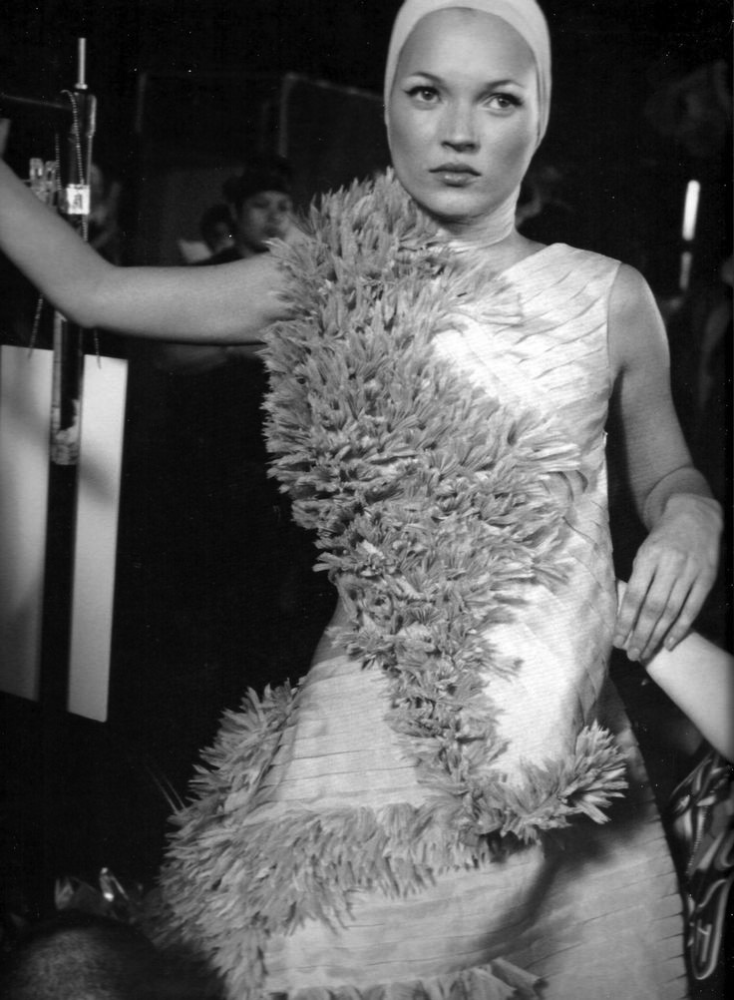

Voss, Spring/Summer 2001
Photograph by Anne Deniau
Photograph by Anne Deniau
The show was staged inside a huge two-way mirrored box, whereby the audience was reflected in the glass before the show began and then the models could not see out once the show started.
Alexander McQueen